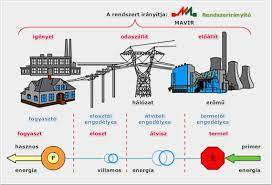

Tantárgy feladata és célja :
-
Tudás: Ismeri a villamosmérnöki szakterület műveléséhez szükséges általános és specifikus matematikai,
természet- és társadalomtudományi elveket, szabályokat, összefüggéseket, eljárásokat. Ismeri a villamosmérnöki szakterület
legfontosabb elméleteit, összefüggéseit és ezek terminológiáját. Ismeri az elektronika, az infokommunikáció, az irányítástechnika,
az elektronikai technológia és a villamos energetika alapvető tervezési elveit, módszereit és eljárásait. Ismeri a villamos szakterületen
használt berendezések, eszközök működési elveit, szerkezeti egységeit. Ismeri a villamos szakterületen használatos mérési eljárásokat,
azok eszközeit, műszereit, mérőberendezéseit. Ismeri a szakterületéhez kapcsolódó munka- és tűzvédelmi, biztonságtechnikai területek elvárásait,
követelményeit, a környezetvédelem vonatkozó előírásait.
- Képesség: Képes a villamosenergia-ellátás, -tárolás és -átalakítás folyamatához kapcsolódó feladatok megoldására.
. Képes munkavédelmi feladatok megoldására.
Képes értelmezni és jellemezni a villamos rendszerek szerkezeti egységeinek, elemeinek felépítését, működését, az alkalmazott
rendszerelemek kialakítását és kapcsolatát. Képes a szakterületének jellemző online és nyomtatott
szakirodalmának feldolgozására magyar és idegen nyelven, és annak mérnöki feladatokra való felhasználására. Képes arra, hogy szakterületének megfelelően,
szakmailag adekvát módon, szóban és írásban kommunikáljon anyanyelvén és legalább egy idegen nyelven. Gyakorlati tevékenységek elvégzéséhez megfelelő kitartással rendelkezik.
- Attitűd: Betartja a munkavégzés és munkavállalás jogi szabályrendszerét. Elkötelezett a minőségi követelmények betartására és betartatására.
Betartja és betartatja a szakterületéhez kapcsolódó munka- és tűzvédelmi, biztonságtechnikai követelményeket, törekszik arra, hogy önképzése a villamosmérnöki
szakterületen folyamatos és szakmai céljaival megegyező legyen. Megosztja tapasztalatait munkatársaival. Törekszik a jogkövető magatartásra és az etikai szabályok
figyelembevételére. Elkötelezett az egészség- és biztonságkultúra, az egészségfejlesztés iránt.
- Autonomia és felelősség: Önállóan képes szakterületén átfogó, megalapozó szakmai kérdések értelmezésére. Villamosmérnöki feladatok megoldása során önállóan választja
ki és alkalmazza a releváns problémamegoldási módszereket. Munkahelyi vezetőjének útmutatása alapján irányítja a rábízott személyi állomány munkavégzését, felügyeli a gépek, berendezések üzemeltetését.
Vissza
